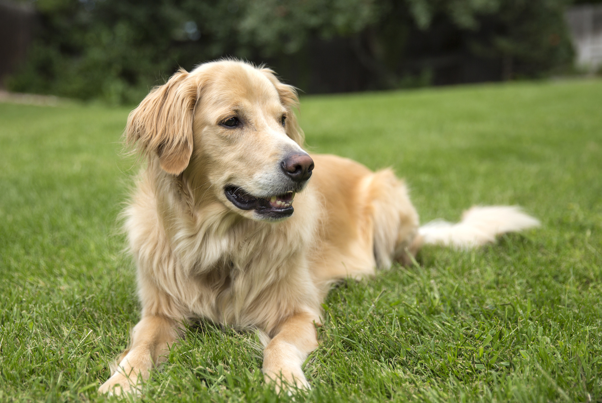
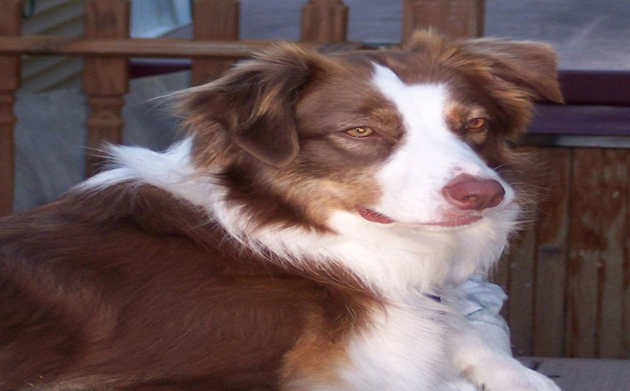

<ion-content padding class="animated fadeIn common-bg" padding class="body" >
  <div class="header-banner" >
    <h2 class="co">Inicio</h2>
    <ion-slides class="home-slide"  *ngIf="recomendaciones && recomendaciones.length"  autoplay="800" loop>
      <ion-slide *ngFor="let i of recomendaciones">
        <ion-card class="imgRedonda" >
          
          <div class="card-title" class="le">{{i.titulo}}</div>
            <h2 class="alinea">
             {{i.descripcion}}, compralo en : {{i.link}}
            </h2>
        </ion-card>
      </ion-slide>
    </ion-slides>
  </div>
  <div class="header-banner">
    <h2 class="co">Adopta una mascota</h2>
    <ion-slides  class="home-slide" *ngIf="anuncio && anuncio.length" autoplay="800"  loop>
      <ion-slide *ngFor="let a of anuncio">
        <ion-card class="imgRedonda">
          <p></p>
          <div class="card-title" class="le">{{a.descripcion}}</div>
          <h2 class="alinea">{{a.especie}} {{a.genero}} de  {{a.edad}} años </h2>
        </ion-card>
      </ion-slide>
    </ion-slides>
  </div>


  <div class="header-banner">
    <h2 class="co">Animales extraviadas</h2>
    <!--
    <ion-slides class="home-slide"  *ngIf="anuncio && anuncio.length" autoplay="800"  loop>
      <ion-slide *ngFor="let b of anuncio">
        <ion-card class="imgRedonda">
          <p></p>
          <div class="card-title" class="le">{{b.descripcion}}</div>
          <h2>{{b.especie}} {{b.genero}} de  {{b.edad}} años </h2>

        </ion-card>
      </ion-slide>
    </ion-slides>
    -->

    <ion-slides class="home-slide" autoplay="800"  loop>
      <ion-slide >
        <ion-card class="imgRedonda">
          <p></p>
          <div class="card-title" class="le">Rocky</div>
          <h2 class="alinea"> Se extravio cerca de la tecnica,llevaba una correa color verde, es muy docil</h2>

        </ion-card>
      </ion-slide>
      <ion-slide >
        <ion-card class="imgRedonda">
          <p></p>
          <div class="card-title" class="le">Chocolata</div>
          <h2 class="alinea"> Se extravio cerca de el instituto San miguelensee,llevaba una correa color verde, es muy docil y muy juguetona</h2>

        </ion-card>
      </ion-slide>

      <ion-slide >
        <ion-card class="imgRedonda">
          <p></p>
          <div class="card-title" class="le">Tom</div>
          <h2 class="alinea"> Se extravio cerca de la colonia insurgentes,llevaba una correa color verde, es muy docil y muy juguetona</h2>

        </ion-card>
      </ion-slide>
    </ion-slides>


  </div>
</ion-content>
